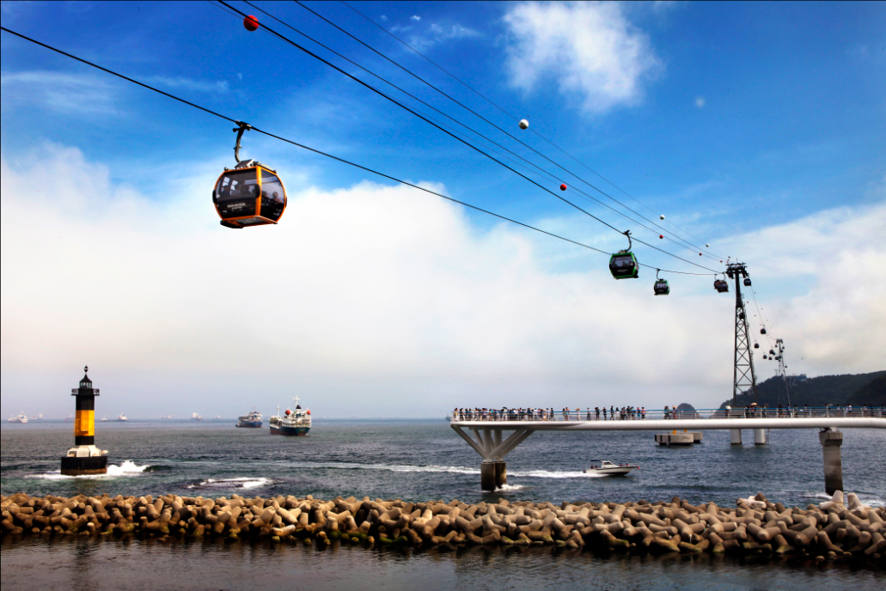
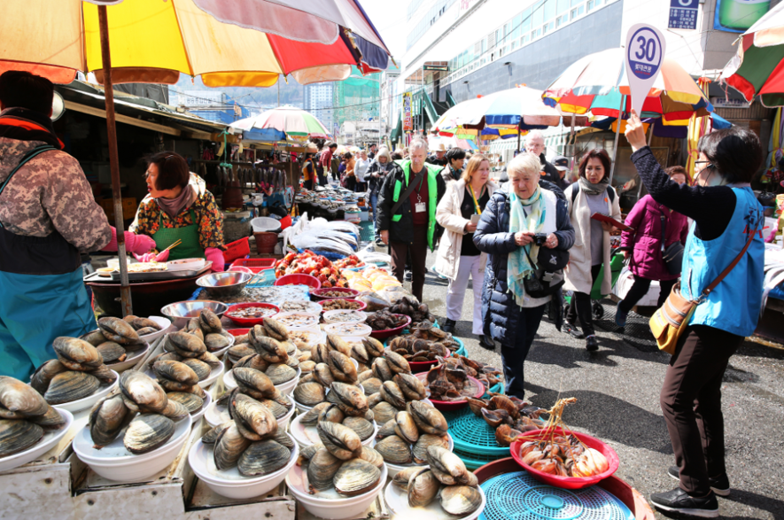
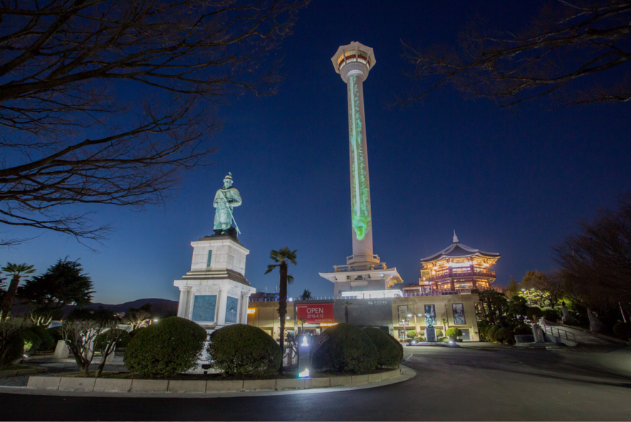

*For excursion, two English tour guides and two Limousine will be provided.
◆Songdo Marine Cable Car

A special attraction of Songdo is Songdo Marine Cable Car that is restarting its operation at June 21st 2017, in 29 years. It’s the first marine cable car across the sea and the sky around the beach.
◆Jagalchi Market

Jagalchi Market is famous for the slogan, “Come, See, and Buy.” It is a place where you can feel the unique friendliness of Busan.
A selected fish can be sliced on the spot for you to eat raw. Watching a flopping fish cleaned into sliced raw fish is in itself an amazing scene. Jagalchi Market is a must-see place for tourists.
◆Yeongdusan Park / Busan Tower

The 120-meter high Busan Tower commands a particularly impressive view of Busan. It is also loved as a break area downtown where various programs and events are held each season.
Please note that it can be easily reached by using the escalator leading to the park which was installed on Gwangbok-ro Street.